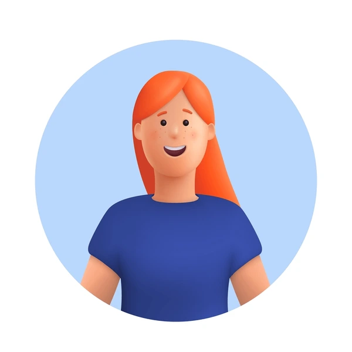
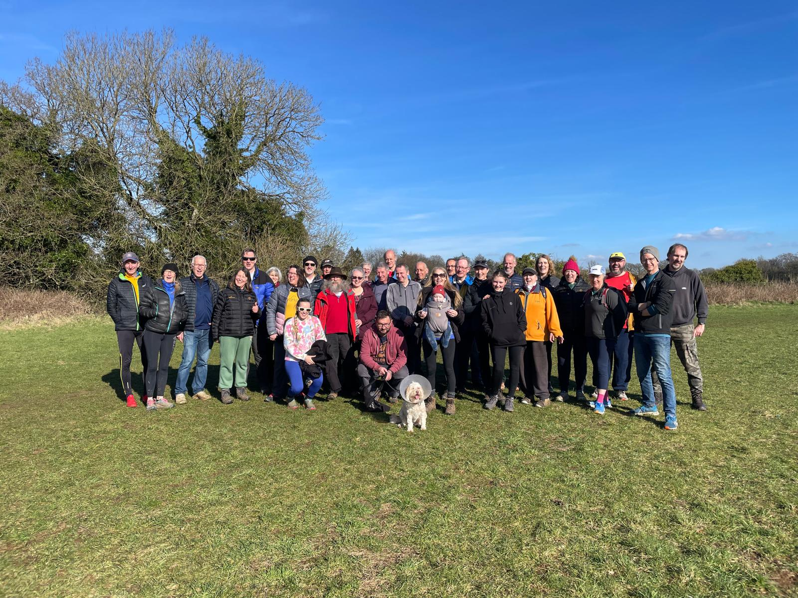
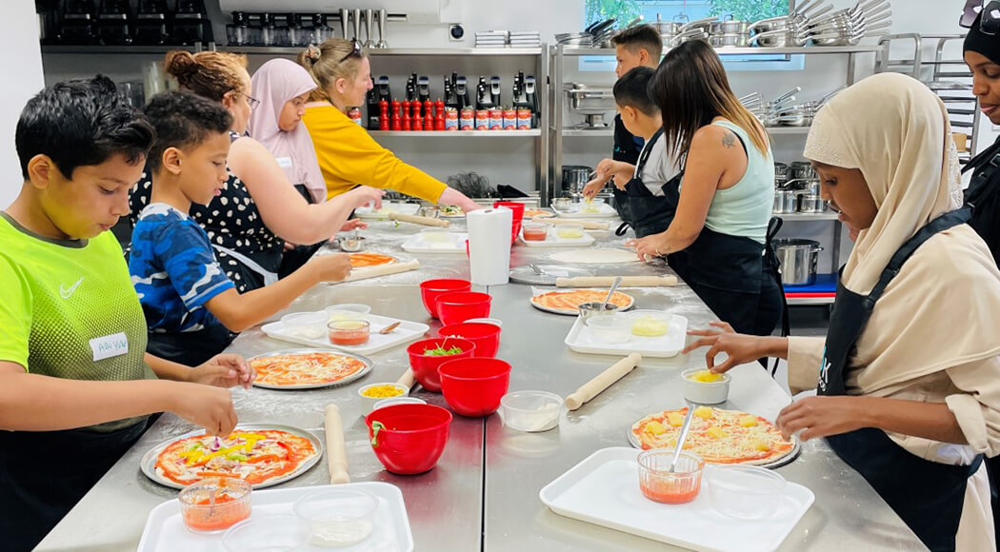
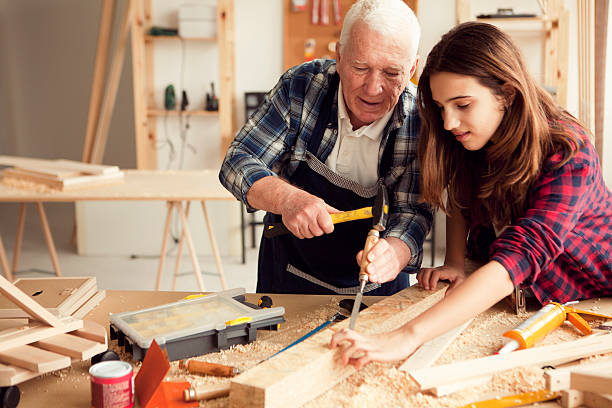

Jenny Foster
Community Leader at Park Run
2 hours ago
Join Us for a Fun and Friendly Park Run!
Looking for a great way to stay active, meet new people, and enjoy the outdoors? Come join us for our Park Run Event this weekend!
📅 Date: Every Saturday
📍Location: Claverton Down
⏰ Time: 9:00am
This event is open to runners, joggers, and walkers of all ages and fitness levels. Whether you're a seasoned runner or just looking for a casual stroll, this is a perfect opportunity to get moving in a friendly and welcoming environment.
What to Expect:
✅ A scenic route through the park
✅ A supportive and encouraging community
✅ Post-run refreshments and socialising
✅ A fun and healthy start to your weekend!
Bring your friends, family, and even your furry companions (on a leash) for a morning of fitness and fun. Registration is free, and no prior experience is necessary—just show up and enjoy the run!
Let us know if you're coming by commenting below or sending us a message. We can't wait to see you there! 🏃♀️🏃♂️💨

Madge Hartland-Dykes and 32 others
22 comments · 8 shares
Like
Comment
Share
Amanda Locke
Community Leader at Twerton Community Network
5 hours ago
🍴 Cooking Together: A Class for All Ages! 🍴
Cooking is more than just preparing meals; it's about creating memories, sharing stories, and bringing people together. That’s why we're excited to offer a cooking class open to everyone—children, parents, students, and even seniors! 👩🍳👨🍳👵👦
Whether you're learning how to bake cookies with your little one, picking up a new recipe as a student, or sharing your favorite family dish with the community, this class is a perfect way to bond, learn, and enjoy delicious food across generations. 🍪🥘
📅 Date: Tuesdays
📍Location: Twerton Village Hall
⏰ Time: 4:00-5:00pm
Let's stir up some fun, share tips, and enjoy the joy of cooking together! 🥄💫 #CookingForAllAges #FamilyFun #CommunityCooking #GenerationalCooking

Madge Hartland-Dykes and 32 others
22 comments · 8 shares
Like
Comment
Share
John Smith
Community Leader at University of Bath
12 hours ago
🌟 Bridging Generations: Older Adults Teaching the Next Generation! 🌟
There’s something special about the wisdom passed down through generations, and one of the most valuable skills older adults can share with young people is the art of car maintenance and using tools! 🚗🔧
From changing a tire to fixing a leaky faucet, these practical skills can empower young people with confidence and independence. By learning from those who’ve been there before, they not only gain valuable hands-on experience but also strengthen the bond between generations. 💪👥
📅 Date: Saturday 22nd March
📍Location: Twerton Village Hall
⏰ Time: 12:00-2:00pm
Let’s celebrate the exchange of knowledge and continue passing down these life lessons—one tool at a time! 🛠️✨ #Community #Mentorship #CarMaintenance #GenerationalWisdom #SkillsForLife

Madge Hartland-Dykes and 32 others
22 comments · 8 shares
Like
Comment
Share